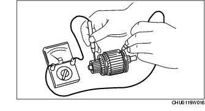
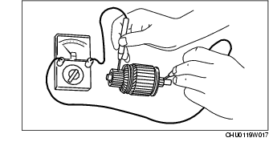
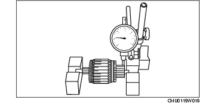
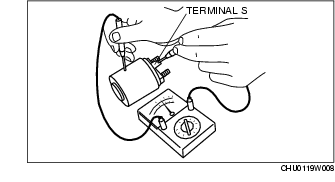
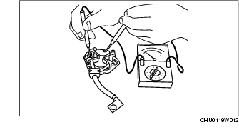
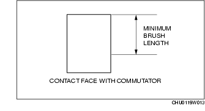
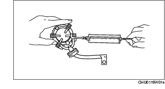

Starter inspection [ZY]
On-vehicle Inspection
1. Verify that the battery is fully charged.
2. Verify that the starter rotates smoothly without any noise when the engine is cranked.
No Load Test
1. Verify that the battery is fully charged.
2. Connect the starter, battery, and a tester as shown in the figure.

3. Operate the starter and verify that it rotates smoothly.
4. Measure the voltage and current while the starter is operating.
Starter no load test voltage Starter no load test currentMagnetic Switch Operation Inspection
Pull-out test
- • In case the battery is being charged, the pinion may turn during a protruded state. This is normal because the current flows to the motor through the pull-in coil and the motor turns.
1. Verify that the drive pinion is pulled out with battery positive voltage connected to terminal S and the starter body grounded.

Return test
1. Disconnect the motor wire from terminal M.
2. Connect battery positive voltage to terminal M and ground the starter body.

3. Pull out the drive pinion with a screwdriver. Verify that it returns to its original position when released.
Pinion Gap Inspection
1. Pull out the drive pinion with battery positive voltage connected to terminal S and the starter body grounded.

- • Applying power for more than 10 s can damage the starter. Do not apply power for more than the aforementioned time.
2. Measure the pinion gap while the drive pinion is pulled.

- • If not as specified, adjust with an adjustment washer (between drive housing front cover and magnetic switch).
Starter Inner Parts Inspection
Armature
1. Verify that there is no conductivity between the commutator and the core at each segment using an ohmmeter.

2. Verify that there is no conductivity between the commutator and the shaft using an ohmmeter.

3. Place the armature on V-blocks, and measure the runout using a dial indicator.

Runout
4. Measure the commutator diameter.

Standard commutator diameter Minimum commutator diameter
5. Measure the segment groove depth of commutator.

Standard depth Minimum depth
Magnetic switch
1. Inspect for conductivity between terminals S and M using an ohmmeter.

2. Inspect for conductivity between terminal S and the body using an ohmmeter.

3. Verify that there is no conductivity between terminals M and B using an ohmmeter.

Brush and brush holder
1. Verify that there is no conductivity between each insulated brush and plate using an ohmmeter.

2. Measure the brush length.
Standard brush length Minimum brush length

3. Measure the brush spring force using a spring balance.
Standard spring force Minimum spring force
